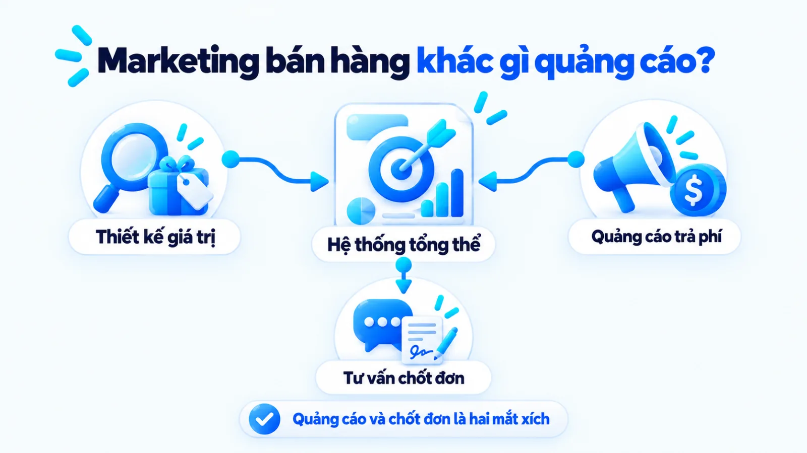
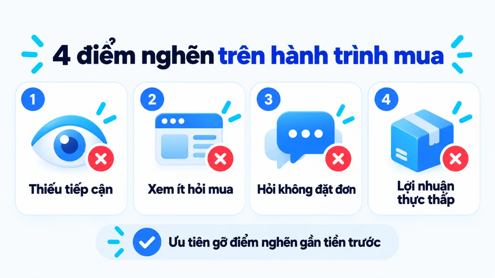
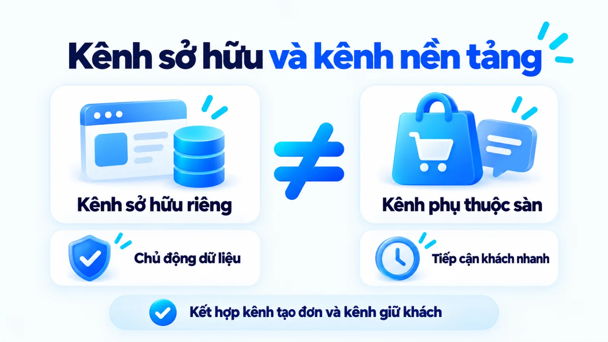
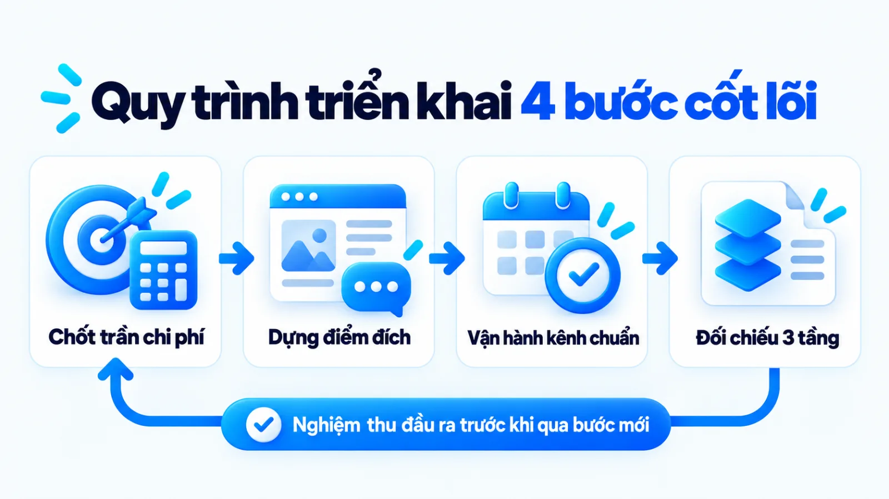
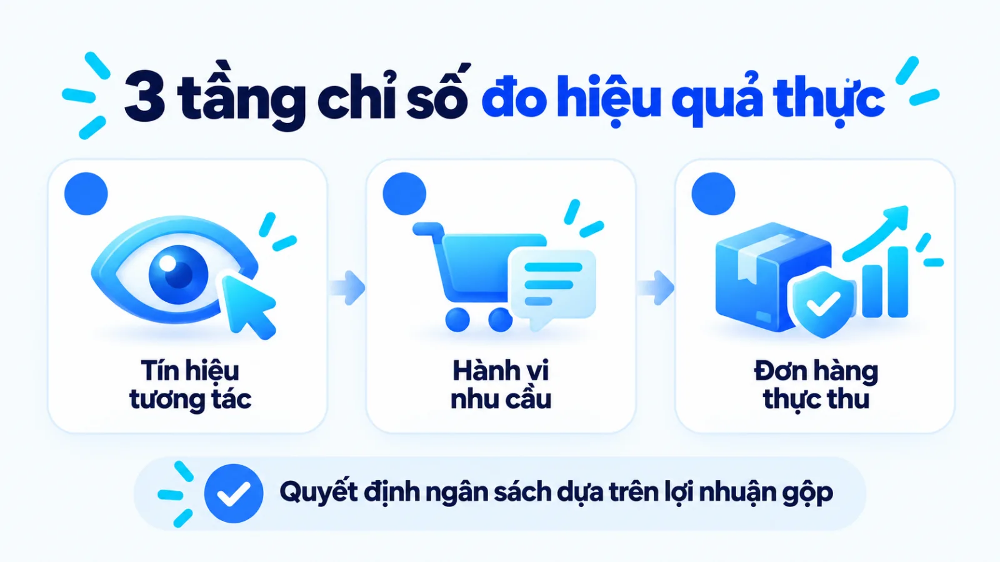
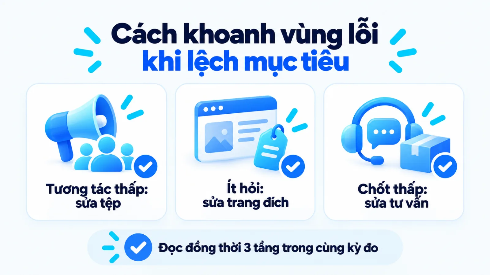

Marketing bán hàng online là gì? Cách bắt đầu
Marketing bán hàng online là hệ thống hoạt động từ nghiên cứu nhu cầu, thiết kế đề nghị giá trị, chọn kênh tiếp cận đến dẫn dắt người mua hoàn tất đơn hàng và quay lại mua tiếp trên môi trường số. Với doanh nghiệp vừa và nhỏ, việc đánh đồng hoạt động này với chạy quảng cáo hoặc mở gian hàng trên mọi nền tảng thường khiến ngân sách và nhân sự bị chia nhỏ trong khi khâu tư vấn chốt đơn vẫn đứt gãy. Khi xác định đúng điểm nghẽn trên hành trình mua trước khi chọn kênh chủ lực, đội ngũ mới tập trung được nguồn lực vào nơi tạo ra đơn hàng có biên lợi nhuận thực tế. Tôi là Lê Tuấn Việt, Marketing Leader tại TAKI Group. Trong bài viết này, tôi phân tích ranh giới giữa marketing, quảng cáo và bán hàng trực tuyến, tiêu chí chọn hệ kênh tối thiểu theo nguồn lực cùng cách đọc dữ liệu chuyển đổi để điều chỉnh kế hoạch đúng lúc.
- Đăng ngày
- Cập nhật

Tóm tắt nhanh
- Marketing bán hàng online bao phủ toàn bộ chuỗi tạo nhu cầu, xây dựng đề nghị giá trị và dẫn dắt người mua tới đơn hàng lặp lại, không đồng nhất với riêng việc chạy quảng cáo hay đăng bài bán.
- Doanh nghiệp vừa và nhỏ nên chẩn đoán và xử lý điểm nghẽn gần tiền nhất như trang đích, tốc độ phản hồi và luồng thanh toán trước khi đổ ngân sách mở rộng tiếp cận.
- Một hệ kênh tối thiểu gồm một kênh chủ lực tạo đơn hàng kết hợp một đến hai kênh hỗ trợ giữ dữ liệu giúp đội ngũ mỏng kiểm soát tốt chi phí và chất lượng phục vụ.
- Khung đo lường hiệu quả cần tách bạch ba tầng gồm tín hiệu tương tác đầu phễu, hành vi thể hiện nhu cầu đạt chuẩn và lợi nhuận thực tế sau hoàn hủy để tránh đọc lệch báo cáo.
Mục lục bài viết9 phần
Marketing bán hàng online là gì?
Marketing bán hàng online là hệ thống hoạt động từ nghiên cứu nhu cầu, thiết kế đề nghị giá trị, chọn kênh tiếp cận đến dẫn dắt người mua hoàn tất đơn hàng và quay lại mua tiếp trên môi trường số, thay vì chỉ dừng ở việc đăng bài hay chạy quảng cáo.
Dưới góc độ vận hành, đây không phải là thuật ngữ học thuật tách rời mà là cách gọi thực tế cho bài toán kết hợp hệ thống digital marketing với mục tiêu tạo đơn hàng trực tuyến có lãi. Theo định nghĩa chuẩn ngành của American Marketing Association, marketing là quy trình tạo ra, truyền thông, phân phối và trao đổi các đề nghị có giá trị cho khách hàng, trong đó quảng cáo chỉ là một phần của khâu truyền thông.

Ranh giới giữa marketing, quảng cáo và bán hàng
Nhiều SME (doanh nghiệp vừa và nhỏ) thường gộp chung việc nạp tiền chạy quảng cáo với làm marketing, dẫn tới tình trạng có nhiều lượt hỏi giá nhưng khâu chốt đơn lại đứt gãy. Khi phân tách rõ mục tiêu, phạm vi công việc, đầu ra đo lường và vai trò phối hợp, đội ngũ sẽ thấy rõ ba mảng hoạt động này vận hành theo bốn tiêu chí đối chiếu trong bảng dưới đây.
| Tiêu chí đối chiếu | Marketing bán hàng online | Quảng cáo và Bán hàng online |
|---|---|---|
| Mục tiêu cốt lõi | Xây dựng đề nghị giá trị, tạo nhu cầu đúng tệp và tối ưu toàn hành trình mua | Quảng cáo mua sự chú ý trả phí; bán hàng trực tiếp tư vấn và chốt giao dịch |
| Phạm vi công việc | Nghiên cứu khách hàng, đóng gói sản phẩm, chọn kênh, nội dung và giữ chân | Quảng cáo phân phối thông điệp; bán hàng tư vấn giá và chốt đơn |
| Đầu ra đo lường | Tỷ lệ chuyển đổi toàn phễu, chi phí thu hút khách và giá trị vòng đời khách | Quảng cáo đo hiển thị, lượt nhấp; bán hàng đo tỷ lệ chốt và đơn |
| Quan hệ phối hợp | Thiết kế đường dẫn mua và tạo bằng chứng tin cậy cho toàn phễu | Quảng cáo kéo khách vào điểm đích để đội bán hàng chốt giao dịch |
Ở doanh nghiệp quy mô nhỏ, một nhân sự có thể kiêm nhiệm nhiều vai trò, nhưng báo cáo vẫn phải tách bạch từng khâu để biết điểm rơi khách nằm ở thông điệp tiếp thị hay ở kỹ năng chốt đơn.
Đầu ra cần có trước khi chọn kênh triển khai
Theo hướng dẫn của U.S. Small Business Administration, kế hoạch tiếp thị của doanh nghiệp nhỏ cần xác định rõ thị trường mục tiêu, lợi thế cạnh tranh và hành trình mua trước khi quảng bá. Khi lập kế hoạch cho doanh nghiệp có nguồn lực mỏng, tôi ưu tiên khóa trước ba đầu ra nền tảng gồm: chân dung người mua ưu tiên, đề nghị giá trị đủ bù chi phí tiếp thị và điểm đích hiển thị rõ giá cùng chính sách bảo hành.
Điểm nghẽn nào cần xử lý trước khi chọn kênh?
Trước khi mở thêm kênh hoặc tăng ngân sách cho marketing bán hàng online, doanh nghiệp cần xác định điểm nghẽn đang nằm ở khâu thiếu lượt tiếp cận, thiếu tương tác đúng nhu cầu, rớt khách ở bước chốt đơn hay biên lợi nhuận và tỷ lệ mua lại thấp. Bốn nhóm điểm nghẽn điển hình dọc theo hành trình mua hàng gồm:
- Thiếu người biết đến sản phẩm: Hiển thị và truy cập tự nhiên thấp do độ phủ hẹp hoặc định vị mờ nhạt, cần rà lại nhu cầu trước khi chạy quảng cáo.
- Xem nhiều nhưng ít hỏi mua: Có lượt truy cập nhưng ít người xem giá hay nhắn tin do nhắm sai tệp khách hoặc thông điệp thiếu bằng chứng thực tế.
- Hỏi mua nhưng không đặt đơn: Khách đã nhắn tin hoặc thêm giỏ hàng nhưng bỏ dở vì tư vấn chậm, phí giao cao, thanh toán phức tạp hoặc thiếu bảo hành.
- Có đơn nhưng lợi nhuận mỏng: Doanh số tăng nhưng âm dòng tiền do chi phí quảng cáo vượt lãi gộp, hoàn hàng cao hoặc thiếu kịch bản bán lặp lại.

Thiếu người biết đến sản phẩm và thương hiệu
Dấu hiệu của điểm nghẽn này là số lượt tìm kiếm tên thương hiệu, lượt vào gian hàng và lượt xem nội dung hàng tuần đều rất thấp dù tỷ lệ mua của nhóm khách đã biết đến cửa hàng khá tốt. Trước khi chi tiền chạy quảng cáo, đội ngũ cần rà lại cách chọn góc nội dung xem đã chạm đúng vấn đề thực tế của người mua hay mới chỉ liệt kê thông số kỹ thuật khô khan.
Có người xem nhưng ít thể hiện nhu cầu mua
Khi bài viết có nhiều lượt xem nhưng ít người mở bảng giá hoặc nhắn tin, hệ thống đang tắc ở bước chuyển từ chú ý sang quan tâm. Theo Nielsen Norman Group, các hành động nhỏ như xem chi tiết sản phẩm hay đọc đánh giá là micro conversion (chuyển đổi vi mô) giúp phát hiện điểm nghẽn trước chuyển đổi chính. Đội ngũ cần kiểm tra xem nội dung kéo sai tệp hay thiếu bằng chứng tin cậy.
Có nhu cầu nhưng không hoàn tất đơn hàng
Ở chặng này, khách hàng đã thêm hàng vào giỏ hoặc nhắn tin hỏi giá nhưng không tiến tới macro conversion (chuyển đổi vĩ mô, tức hành động hoàn tất đơn hàng đóng góp trực tiếp vào mục tiêu cốt lõi theo phân loại của Nielsen Norman Group). Điểm đứt gãy thường nằm ở tốc độ phản hồi tư vấn chậm trễ, biểu mẫu đặt hàng rườm rà hoặc phát sinh phí vận chuyển bất ngờ ở bước thanh toán.
Có đơn nhưng lợi nhuận hoặc tỷ lệ mua lại thấp
Tình trạng có đơn đi mỗi ngày nhưng cuối tháng vẫn âm dòng tiền xuất phát từ việc chi phí thu hút khách mới cộng phí chiết khấu nền tảng và đơn hoàn hủy đã ăn mòn hết biên lợi nhuận gộp. Với ngành hàng tiêu dùng có giá trị đơn lẻ vừa phải, chất lượng sản phẩm thực nhận và kịch bản chăm sóc khách cũ mua lại quyết định trực tiếp khả năng duy trì lợi nhuận ròng.
Cách chọn kênh marketing bán hàng online
Để triển khai marketing bán hàng online hiệu quả khi ngân sách hạn hẹp, doanh nghiệp vừa và nhỏ nên chọn một kênh chủ lực khớp với hành vi mua của khách hàng và năng lực vận hành hiện tại, kết hợp tối đa một đến hai kênh hỗ trợ theo ba nhóm lựa chọn trong bảng dưới đây.
| Nhóm kênh bán | Phù hợp khi doanh nghiệp có điều kiện | Đánh đổi và ngoại lệ đảo chiều |
|---|---|---|
| Sàn thương mại | Hàng dễ so giá, nhu cầu tìm mua sẵn có và cần xoay vòng vốn nhanh | Phí sàn cao, khó giữ dữ liệu; không hợp sản phẩm cần tư vấn sâu |
| Mạng xã hội | Sản phẩm cần giải thích công năng, nhìn hình ảnh thực tế và tư vấn 1 kèm 1 | Phụ thuộc thuật toán phân phối và tốn nhân sự trực chat để giữ tỷ lệ chốt |
| Website riêng | Sản phẩm giá trị cao, chu kỳ cân nhắc dài hoặc cần tích lũy dữ liệu khách | Tốn thời gian xây dựng đầu kỳ; chưa có đơn ngay nếu thiếu khách |
Bảng lựa chọn trên đặt trên giả định doanh nghiệp có sản phẩm đạt chuẩn chất lượng và biên lợi nhuận đã tính đủ chi phí vận hành cơ bản. Hiệu quả thực tế phụ thuộc vào độ khớp giữa thói quen mua sắm của phân khúc mục tiêu và năng lực thực thi của đội ngũ nội bộ.

Kênh sở hữu và kênh phụ thuộc nền tảng
Khi phân loại hệ thống kênh tiếp thị số, tiêu chí quan trọng nhất với chủ doanh nghiệp là quyền kiểm soát mối quan hệ và dữ liệu người mua. Hai nhóm kênh phân theo quyền kiểm soát dữ liệu gồm:
- Kênh phụ thuộc nền tảng: Gồm sàn thương mại điện tử và mạng xã hội, nơi có sẵn lưu lượng lớn nhưng nền tảng nắm quyền đổi thuật toán hiển thị, thu phí và giới hạn dữ liệu người mua.
- Kênh sở hữu của doanh nghiệp: Gồm website riêng và tệp dữ liệu khách hàng, nơi bạn cần tự kéo lượt truy cập nhưng được làm chủ hoàn toàn giao diện, luồng đặt hàng và việc chăm sóc khách mua lại về lâu dài.
Hiểu rõ ranh giới này giúp doanh nghiệp chủ động thu thập zero-party data và first-party data (dữ liệu khách hàng tự nguyện cung cấp và dữ liệu chính chủ thu thập từ điểm chạm của doanh nghiệp) để chăm sóc khách cũ khi chi phí quảng cáo tăng cao.
Một kênh chủ lực và các kênh hỗ trợ
Với đội ngũ dưới ba nhân sự, cách làm thực tế là dồn phần lớn thời gian và ngân sách vào một kênh chủ lực duy nhất có khả năng tạo ra đơn hàng thật để chuẩn hóa thông điệp và quy trình chốt đơn. Một đến hai kênh hỗ trợ còn lại chỉ đóng vai trò xác thực uy tín thương hiệu hoặc lưu giữ thông tin khách hàng sau khi giao dịch đầu tiên đã hoàn tất.
Đánh đổi giữa tốc độ tiếp cận, dữ liệu và vận hành
Nếu ưu tiên có đơn ngay qua sàn thương mại điện tử hoặc quảng cáo tin nhắn, doanh nghiệp phải chấp nhận biên lợi nhuận mỏng hơn do phí nền tảng và chi phí đấu giá hiển thị. Ngược lại, khi xây dựng tài sản bền vững qua website và cách bắt đầu Content Marketing bài bản, chủ doanh nghiệp cần chuẩn bị dòng tiền duy trì trong vài tháng đầu trước khi lưu lượng tự nhiên tạo đơn đều đặn.
Quy trình marketing bán hàng online 4 bước
Một quy trình marketing bán hàng online thực chất gồm bốn bước tuần tự từ chốt chân dung khách hàng và mục tiêu đơn hàng, hoàn thiện đề nghị giá trị cùng đường dẫn mua, vận hành kênh trọng tâm đến đo lường điểm nghẽn để điều chỉnh. Sự khác biệt giữa làm theo cảm tính và làm có hệ thống nằm ở việc khóa chặt đầu ra nghiệm thu sau từng bước thực hiện.
- 01Chốt khách hàng và mục tiêuXác định phân khúc khách ưu tiên, nhu cầu thực và trần chi phí trên mỗi đơn.
- 02Chuẩn hóa đề nghị và điểm đíchĐóng gói sản phẩm chủ lực, bằng chứng tin cậy và chuẩn hóa luồng đặt hàng.
- 03Vận hành kênh và nội dungTriển khai thông điệp trên kênh chủ lực, gắn người phụ trách tiếp nhận và cam kết thời gian phản hồi.
- 04Đo kết quả và điều chỉnhĐối chiếu chuyển đổi trung gian với số đơn thành công để giữ, sửa hoặc dừng.

Bước 1: Chốt khách hàng, nhu cầu và mục tiêu
Theo hướng dẫn của U.S. Small Business Administration, doanh nghiệp cần xác định rõ mục tiêu kinh doanh và ngân sách tiếp thị trước khi triển khai. Từ dữ liệu bán hàng lịch sử và giá vốn, người quản lý tính ra số lượng đơn hàng cần đạt trong kỳ cùng mức CPA (Cost Per Acquisition, tức chi phí tối đa cho một đơn hàng thành công) phù hợp với biên lợi nhuận.
Đầu ra: Bảng mục tiêu kinh doanh kỳ tới ghi rõ phân khúc khách hàng, sản phẩm mũi nhọn, số đơn mục tiêu và trần chi phí marketing trên mỗi đơn hàng.
Bước 2: Hoàn thiện đề nghị giá trị và đường dẫn mua
Bộ phận marketing phối hợp với bộ phận bán hàng đóng gói đề nghị giá trị gồm lợi ích cốt lõi của sản phẩm, bằng chứng xác thực và chính sách bảo hành đổi trả. Đồng thời, đội ngũ rà soát toàn bộ đường dẫn mua hàng và thống nhất brand voice và tone of voice (giọng thương hiệu và sắc thái giao tiếp) để khách không bị hẫng khi chuyển từ mẫu quảng cáo sang khung chat tư vấn trực tiếp.
Đầu ra: Một trang đích hoặc gian hàng đã hoàn thiện thông tin và một kịch bản phản hồi tư vấn chuẩn đã chạy thử nghiệm đặt đơn thành công không lỗi.
Bước 3: Chọn kênh, nội dung và người phụ trách
Khi điểm đích đã sẵn sàng đón khách, nhân sự nội dung và quảng cáo mới sản xuất các định dạng bài viết, hình ảnh hoặc video giải quyết đúng rào cản mua hàng để phân phối trên kênh chủ lực. Để tránh đứt gãy tại điểm bàn giao giữa marketing và bán hàng, bước này bắt buộc phải quy định rõ người tiếp nhận phản hồi trong từng khung giờ kèm tiêu chuẩn phân loại khách hàng hỏi mua.
Đầu ra: Lịch phát hành nội dung hoặc phân phối chiến dịch theo tuần kèm bảng phân công nhân sự trực chốt đơn với cam kết thời gian phản hồi cụ thể.
Bước 4: Đo kết quả, rà điểm nghẽn và điều chỉnh
Cuối mỗi chu kỳ tuần hoặc tháng, người phụ trách marketing gom dữ liệu từ trình quản lý kênh tiếp thị và sổ đơn hàng thực tế từ bộ phận bán hàng để đối chiếu trên cùng một mốc thời gian. Đội ngũ đặt các tín hiệu hành vi trung gian cạnh số đơn giao thành công sau hoàn hủy nhằm khoanh vùng khâu làm tụt hiệu suất và quyết định giữ, sửa hay dừng hoạt động gây lãng phí ngân sách.
Đầu ra: Biên bản đối chiếu số liệu ba tầng theo kỳ đo và danh sách tối đa ba đầu việc cần chỉnh sửa có gắn tên người chịu trách nhiệm thực hiện trong tuần tới.
Ví dụ marketing bán hàng online cho SME
Để hình dung rõ cách áp dụng quy trình bốn bước vào thực tế của SME (doanh nghiệp vừa và nhỏ), một cửa hàng trực tuyến có nguồn lực hạn chế sẽ tạo đơn bền vững hơn khi xử lý khâu tư vấn và điểm đích trên một kênh chủ lực trước khi mở rộng kênh phụ. Dưới đây là ví dụ biên tập, không phải kết quả khách hàng thật, mô phỏng cách tháo gỡ điểm nghẽn.
Ví dụ biên tập, không phải kết quả khách hàng thật
Cửa hàng gia dụng chuẩn hóa luồng tư vấn và điểm đích
Một cửa hàng trực tuyến quy mô 3 nhân sự tại Hà Nội bán thiết bị nhà bếp thông minh tầm giá vừa phải. Qua rà soát sổ theo dõi giả định trên 1.000 lượt nhấp vào bài giới thiệu sản phẩm, đội ngũ ghi nhận có 100 người nhắn tin hỏi giá nhưng chỉ có 5 người đặt hàng hoàn tất vì khách nghi ngờ chế độ bảo hành điện tử và phải chờ trả lời tin nhắn quá lâu.
- 10%
- Nhấp vào bài có nhắn tin
- 5%
- Nhắn tin có đặt đơn hàng
- 1 kênh
- Chủ lực kèm trang đích
Bối cảnh, giới hạn nguồn lực và giả thuyết
Trong ví dụ biên tập này, khi dàn trải nhiều kênh với 3 nhân sự, người trực tin nhắn bị quá tải vào giờ cao điểm và thiếu trang thông tin tập trung để gửi nhanh video hướng dẫn cùng cam kết đổi mới 30 ngày. Giả thuyết đặt ra là điểm nghẽn chính nằm ở sự thiếu hụt bằng chứng tin cậy và tốc độ tư vấn ở chặng chốt đơn, chứ không phải do thiếu lượt hiển thị đầu phễu.
Cách chọn kênh chủ lực và hành động tiếp theo
Từ giả thuyết trên, cửa hàng giả định này tạm dừng các kênh phụ để tập trung vào kênh mạng xã hội tạo hội thoại mua ổn định nhất, đồng thời dựng một trang đích trình bày rõ thông số, video thực tế và điều khoản bảo hành một đổi một. Bộ câu trả lời mẫu cho năm thắc mắc thường gặp cũng được cài sẵn để nhân sự phản hồi trong năm phút kèm liên kết về trang đích xác thực.
Cách ghi nhận kết quả không suy diễn nhân quả
Sau bốn tuần thử nghiệm, cửa hàng giả định này theo dõi lại tỷ lệ từ tin nhắn hỏi mua hợp lệ sang đơn hàng giao thành công đã trừ hoàn hủy. Đội ngũ giữ nguyên định nghĩa chỉ số và ghi chú rõ các yếu tố mùa vụ hoặc khuyến mãi diễn ra đồng thời để không quy nhầm toàn bộ mức tăng đơn hàng cho riêng việc sửa trang đích.
Khung đo hiệu quả marketing bán hàng online
Khung đo hiệu quả marketing bán hàng online cần tách bạch ba tầng dữ liệu từ trình quản lý kênh, GA4 (Google Analytics 4) và CRM (hệ thống quản lý khách hàng): tín hiệu tương tác đầu phễu, hành vi thể hiện nhu cầu đạt chuẩn và kết quả kinh doanh thực tế sau hoàn hủy trong bảng dưới đây.
| Tầng chỉ số đo lường | Chỉ số, đơn vị và nguồn dữ liệu | Mục đích dùng và giới hạn khi đọc |
|---|---|---|
| Tầng 1: Tương tác | Hiển thị, lượt nhấp, tỷ lệ nhấp CTR (%) theo phiên từ trình quản lý kênh | Đo sức hút thông điệp đầu phễu; không phản ánh nhu cầu mua thật |
| Tầng 2: Nhu cầu | Xem bảng giá, thêm giỏ, tin nhắn hợp lệ theo người từ GA4 và hộp thư | Đo mức quan tâm thực tế; chưa trừ tỷ lệ hủy đơn hoặc hỏi dò giá |
| Tầng 3: Kết quả thực | Đơn thành công, doanh thu thuần, CPA, lãi gộp từ sổ đơn và CRM | Xác nhận lãi thực theo kỳ đo; có độ trễ do giao hàng và đổi trả |
Bảng khung đo lường trên yêu cầu đội ngũ phải thống nhất đơn vị đếm và khóa cùng một kỳ đo khi đặt các tầng chỉ số cạnh nhau. Số liệu trên trình quản lý quảng cáo không thay thế được sổ đối soát đơn hàng giao thành công của bộ phận kế toán và vận hành.

Tín hiệu tiếp cận và tương tác ở tầng đầu phễu
Các chỉ số ở tầng thứ nhất như lượt hiển thị, lượt xem video hay CTR chỉ cho biết tiêu đề và hình ảnh có đủ sức khiến người dùng dừng lại hay không. Nếu lượt nhấp giá rẻ đến từ việc giật tít lệch với giá trị thật của sản phẩm, chúng chỉ làm tốn băng thông tư vấn mà không tạo ra cơ hội bán hàng nào.
Hành vi thể hiện nhu cầu đạt chuẩn trên kênh
Để nối khoảng trống giữa lượt xem bề nổi và đơn hàng cuối cùng, người phụ trách cần theo dõi tầng thứ hai gồm các hành vi thể hiện sự quan tâm nghiêm túc, được phân tích chi tiết trong bài viết về micro conversion và macro conversion. Với bán hàng qua tin nhắn, chỉ số tầng hai là số cuộc hội thoại đạt chuẩn: khách nằm trong vùng giao hàng, hỏi đúng sản phẩm và phản hồi khi nhận báo giá.
Đơn hàng, doanh thu và lợi nhuận đã xác nhận
Tầng thứ ba gồm số đơn hàng giao thành công và thu tiền, doanh thu thuần sau chiết khấu, chi phí marketing trên một đơn hoàn tất và lợi nhuận gộp còn lại. Theo tài liệu kỹ thuật của Google Analytics Help, thiết lập quy kết (attribution settings) trong Google Analytics 4 quyết định cách phân bổ công đóng góp chuyển đổi cho các quảng cáo, lượt nhấp và điểm chạm khác nhau trên hành trình mua.
Lưu ý về giới hạn quy kết dữ liệu đa kênh
Trong thực tế, khách hàng thường xem video trên mạng xã hội, gửi đường dẫn qua tin nhắn riêng tư cho người thân rồi vài ngày sau mới tìm tên thương hiệu để đặt mua. Công cụ đo lường rất khó ghi nhận trọn vẹn các nguồn chuyển đổi từ dark social này, trong khi mỗi nền tảng quảng cáo lại tự nhận công chuyển đổi nên số đơn báo cáo thường cao hơn sổ bán hàng thật.
Khi nào cần điều chỉnh kế hoạch triển khai?
Quyết định giữ nguyên kế hoạch, điều chỉnh thông điệp hay dừng một kênh marketing bán hàng online phải dựa trên việc đối chiếu đồng thời chi phí thu hút nhu cầu, tỷ lệ chốt đơn thực tế và khả năng đáp ứng của bộ phận vận hành trong cùng một kỳ đo. Khi số liệu lệch mục tiêu, người phụ trách cần khoanh vùng đúng khâu đang gặp sự cố thay vì đập bỏ toàn bộ chiến dịch.

Dấu hiệu lỗi ở thông điệp, kênh hay khâu bán hàng
Nếu lượt hiển thị cao nhưng tỷ lệ nhấp thấp, lỗi nằm ở thông điệp hoặc tệp đối tượng. Nếu tỷ lệ nhấp tốt nhưng người xem thoát ngay mà không đọc bảng giá hay nhắn tin, nguyên nhân nằm ở sự thiếu nhất quán giữa quảng cáo và điểm đích. Còn khi tin nhắn hỏi mua đúng nhu cầu đổ về đều nhưng tỷ lệ chốt thấp, điểm nghẽn thuộc về mức giá, phí giao hàng hoặc kỹ năng tư vấn bán hàng.
Điều kiện cần kiểm tra trước khi tăng ngân sách
Việc bơm thêm tiền vào một hệ thống chưa sẵn sàng thường làm chi phí biên trên mỗi đơn hàng tăng vọt và làm quá tải khâu đóng gói, tư vấn. Trước khi quyết định tăng ngân sách hoặc mở thêm kênh mới, chủ doanh nghiệp cần tự rà soát năm điều kiện bắt buộc trong danh sách kiểm dưới đây:
- Biên lợi nhuận gộp của đơn hàng sau khi trừ toàn bộ chi phí marketing, phí nền tảng và tỷ lệ hoàn hủy trung bình vẫn giữ mức dương trong ít nhất hai kỳ đo liên tiếp.
- Tồn kho của mã hàng chủ lực và năng lực đóng gói, giao vận đảm bảo đáp ứng được lượng đơn tăng thêm mà không làm chậm thời gian giao hàng đã cam kết.
- Đội ngũ trực tin nhắn và gọi xác nhận đơn vẫn giữ được thời gian phản hồi mục tiêu khi lưu lượng cuộc hội thoại tăng lên trong khung giờ cao điểm.
- Hệ thống ghi nhận dữ liệu từ trình quản lý kênh về trang đích và sổ quản lý đơn hàng hoạt động thông suốt, không bị mất dấu nguồn khách hàng.
- Kịch bản xử lý khiếu nại, bảo hành và chăm sóc sau bán đã có người phụ trách rõ ràng để bảo vệ uy tín thương hiệu khi quy mô đơn mở rộng.
Sai lầm thường gặp khi nhìn một chỉ số riêng lẻ
Sai lầm phổ biến là giữ lại mẫu quảng cáo chỉ vì giá mỗi tin nhắn rẻ, dù phần lớn người nhắn chỉ hỏi dò giá hoặc đòi giảm giá sâu. Cách làm đúng là chấp nhận chi phí mỗi hội thoại cao hơn ở nội dung nêu rõ phân khúc giá ngay từ đầu, miễn là tỷ lệ chốt đơn và lãi ròng cuối kỳ đạt mục tiêu. Đã đo chi phí đầu vào là phải kiểm lợi nhuận đầu ra.
Câu hỏi thường gặp về marketing bán hàng online
Marketing bán hàng online nên bắt đầu từ bước nào trước?
Doanh nghiệp nên bắt đầu từ việc chốt nhóm khách hàng mục tiêu, vấn đề họ sẵn sàng trả tiền để giải quyết và biên lợi nhuận gộp của sản phẩm chủ lực trước khi chọn kênh. Sau đó, bạn chuẩn bị một điểm đích nhận khách có đủ thông tin giá, chính sách đổi trả và luồng đặt hàng thông suốt rồi mới đổ nguồn lực kéo lượt truy cập.
Ngân sách ít nên chọn website, mạng xã hội hay sàn thương mại?
Bạn nên chọn một kênh có sẵn người mua đang tìm kiếm hoặc phù hợp nhất với mức độ cần tư vấn của sản phẩm. Hàng tiêu dùng dễ so giá thường hợp sàn thương mại điện tử để xoay vòng vốn nhanh, trong khi sản phẩm cần giải thích công năng nên bắt đầu từ mạng xã hội kết hợp một trang đích gọn để lưu trữ dữ liệu khách hàng.
Khi nào doanh nghiệp chưa nên chạy quảng cáo trả phí?
Không nên bật quảng cáo trả phí khi doanh nghiệp chưa tính được biên lợi nhuận gộp trên mỗi đơn hàng hoặc khi trang đích và kịch bản phản hồi tin nhắn còn sơ sài. Quảng cáo chỉ đưa người xem đến điểm bán nhanh hơn chứ không thể tự sửa lỗi thiếu bằng chứng tin cậy hay tốc độ trả lời khách hàng chậm chạp.
Vì sao nhiều tin nhắn hỏi giá nhưng vẫn ít đơn hàng thật?
Hiện tượng này xuất phát từ việc thông điệp thu hút tệp người xem quá nhạy giá, bài đăng cố tình giấu thông tin cơ bản hoặc nhân sự phản hồi tin nhắn quá muộn. Để xử lý, người phụ trách cần đọc lại mẫu hội thoại thật nhằm tách số tin nhắn hỏi đúng nhu cầu khỏi tin nhắn rác trước khi chỉnh lại giá hoặc kịch bản.
Bao lâu nên đánh giá lại hiệu quả kênh marketing một lần?
Đội ngũ nên rà soát các tín hiệu tương tác và tốc độ phản hồi khách hàng theo từng tuần để kịp thời sửa lỗi kỹ thuật hoặc điều chỉnh nội dung hiển thị. Riêng quyết định giữ, chuyển dịch ngân sách hay dừng hẳn một kênh cần đánh giá theo chu kỳ vài tuần hoặc hàng tháng sau khi đã trừ đơn hoàn hủy để tránh kết luận cảm tính.
Nên giữ khâu nào nội bộ khi thuê ngoài dịch vụ marketing?
Có bốn hạng mục doanh nghiệp bắt buộc phải giữ quyền kiểm soát nội bộ gồm tài khoản quảng cáo, trang đích, danh sách dữ liệu khách hàng và khâu tư vấn chốt đơn trực tiếp. Đơn vị thuê ngoài chỉ phát huy hiệu quả khi được giao các đầu việc thực thi rõ đầu ra như tối ưu kỹ thuật chiến dịch, sản xuất nội dung hoặc dựng báo cáo.
Kết luận
Thứ tự ưu tiên an toàn khi triển khai marketing bán hàng online là khóa chặt đề nghị giá trị và điểm đích chốt đơn trước, làm chủ một kênh tạo đơn có lãi thực rồi mới mở rộng kênh phụ. Ngay trong tuần này, bạn có thể lấy dữ liệu 30 ngày gần nhất để đối chiếu ba tầng chỉ số gồm lượt nhấp, số hội thoại đạt chuẩn và số đơn giao thành công nhằm tìm đúng bước làm rơi nhiều khách.
Khi bài toán vượt khỏi việc sửa từng bài đăng lẻ và đòi hỏi phải cấu trúc lại danh mục sản phẩm, phân bổ ngân sách cùng hệ thống đo lường đồng bộ giữa marketing với bán hàng, doanh nghiệp sẽ cần một khung hoạch định bài bản. Bạn có thể đọc thêm các hướng dẫn tại chuyên mục Marketing và tự hỏi: hệ thống của bạn đang nghẽn ở khâu thu hút khách đúng tệp hay ở khâu chốt đơn có lãi?